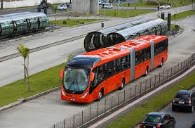
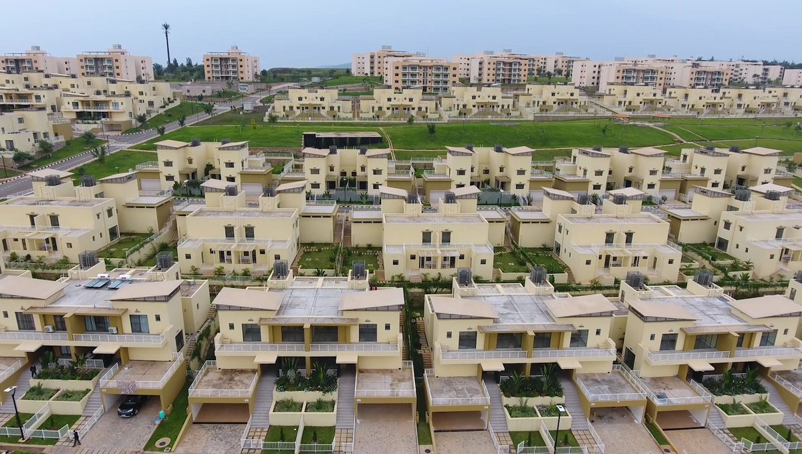

BRT de Curitiba, Brasil
Sistema de Bus Rapid Transit (BRT) pioneiro que inspira o transporte público eficiente e sustentável globalmente.
The High Line, Nova York
High Line (também conhecido como High Line Park) é um parque suspenso localizado na cidade de Nova Iorque. Trata-se de um parque linear de 2,33 km de comprimento no distrito de Manhattan.

The High Line, Nova York
High Line (também conhecido como High Line Park) é um parque suspenso localizado na cidade de Nova Iorque. Trata-se de um parque linear de 2,33 km de comprimento no distrito de Manhattan.